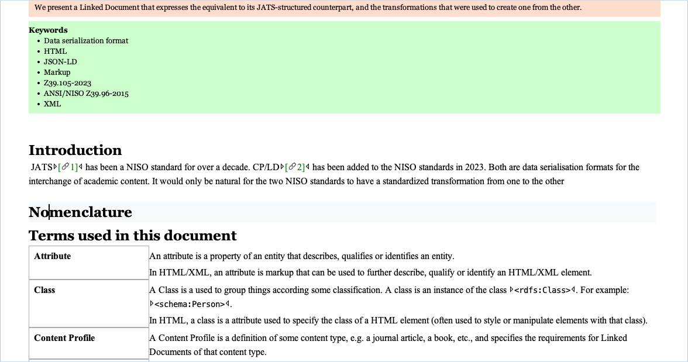
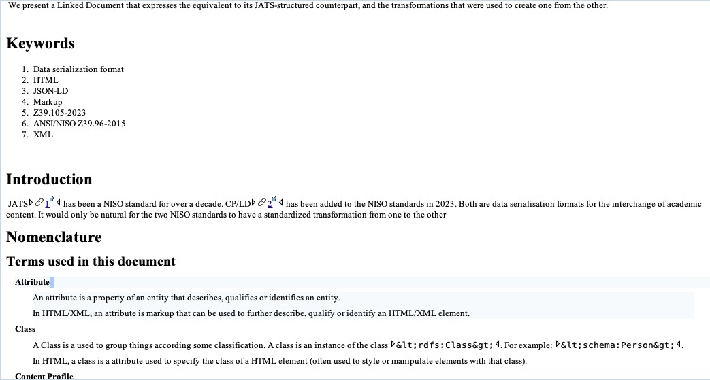
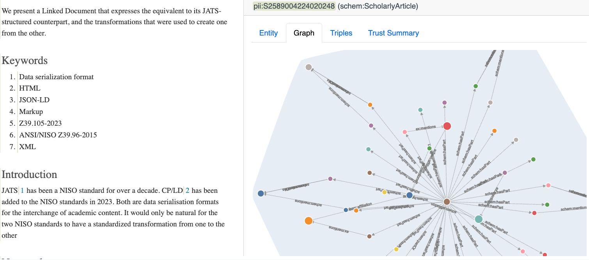

We describe a method for roundtripping between two NISO/ANSI data serialisation formats
for scholarly content. We are transforming XML documents conforming to JATS (Z39.96)
Article Authoring DTD to a Linked Document conforming to a Content Profile based on the
CP/LD-standard (Z39.96-2015). The two data serialisation formats run on different
philosophies. The Tag Library of JATS has a collection of 256 elements, some with a very
specific semantic, such as ack, conf-loc,
collab-name-alternatives. The Linked Documents keeps the
narrative in a lighter HTML structure and offloads the semantics of the serialisation to a
linked-data graph that is referenced from the HTML. This creates a couple of challanges
for the transformation, related to the the question: what goes where?
We present a Linked Document that expresses the equivalent to its JATS-structured
counterpart, and the transformations that were used to create one from the other.
Keywords
Data serialization format
HTML
JSON-LD
Markup
ANSI/NISO Z39.105-2023
ANSI/NISO Z39.96-2015
XML
Introduction
JATS1 has been a NISO standard for over a
decade. CP/LD2 has been added to the NISO
standards in 2023. Both are data serialisation formats for the interchange of academic
content. It would only be natural for the two NISO standards to have a standardized
transformation from one to the other
Nomenclature
Terms used in this document
Attribute
An attribute is a property of an entity that describes, qualifies or identifies an
entity.
In HTML/XML, an attribute is markup that can be used to further describe, qualify or
identify an HTML/XML element.
Class
A Class is a used to group things according some classification. A class is an
instance of the class <rdfs:Class>. For example:
<schema:Person>.
In HTML, a class is a attribute used to specify the class of a HTML element (often
used to style or manipulate elements with that class).
Content Profile
A Content Profile is a definition of some content type, e.g. a journal article, a
book, etc., and specifies the requirements for Linked Documents of that content
type.
Datatype Property
An datatype property is a property that relates a thing to an associated value. For
example: <schema:name>.
Entity
An entity is a thing that is distinct and can be uniquely identified by a URI. An
entity can represent real world things (like a person, a city), conceptual things
(like a class, a property) and relationships (like ownership, friendship)
In HTML, an entity is also used to for a character reference constructed by an escape
sequence of characters to represent another (Like <
representing a <
In XML, an entity may refer to a character entity, an document-internally declared
entity in the <!DOCTYPE declaration, or an externally
referenced resource using the SYSTEM keyword and a path or URL
to that resource.
Entity Type
An Entity Type is class of entities that share a common set of attributes such as
<schema:Person>,
<schema:Organization>.
Linked Data
Linked Data is a set of best practices for publishing and connecting structured (and
machine-readable) data, using URI's as identifier for entities.
Linked Document
A Linked Document is a collection of multiple files (HTML, JSON (and optionally other
referenced media)) that represent some coherent content and conforms to a Content
Profile and the CP/LD Standard.
Narrative structure annotation
A narrative structure annotation is a relation between a Linked Document fragment and
a typing of that fragment from a controlled vocabulary.
Object Property
An object property is a property that relates one thing to another. For example:
<schema:author> (relating a instance of a
<schema:Person> to an instance of a
<schema:ScholarlyArticle>)
Property
A property describes a relation between a thing and an associated value or a relation
between two things. A property is an instance of the class
<rdfs:Property>.
Comparison
XML elements are added to JATS where needed (by the JATS Standing Committee12) to add specific semantics. CP/LD doesn't use the
HTML, but entity types and properties from schema's, such as
schema.org to capture semantics.
Example: <principal-investigator> and
<principal-award-recipient>
In JATS these are two elements describing the role of an organization or an individual with
respect to a grant that was awarded by another organisation to fund a research activity. In
CP/LD, the document fragments (like a <span>) carrying the
names of the schema:Organization or
schema:Person, or schema:Grant in the text
would be associated with entities that have properties describing their relationships.
173(1) in HTML, 811 Types, 1485
Properties 14 Datatypes, 89 Enumerations and 499 Enumeration members. in
schema.org
Internal linking
id-attribute and linking attributes
rid
id-attribute and href-attribute on
element <a>
Narrative structures
Dedicated elements such as <abstract>,<ack>
Generic elements such as <section> and
<div> that are typed as an instance of a class from a controlled
vocabulary
Entity representation
Dedicated elements such as <contrib-id> with
identifier types such as @contrib-id-type (and
<pub-id> with @pub-id-type) as
part of the XML fragment
Entities, relations and properties are treated genericly using a graph
representation serialized as JSON-LD. Linking between entities and where the are
mentioned in the HTML is done through the document fragment identifier
From JATS to CP/LD
Going from JATS-xml to HTML has been in existence for a long time. In particular as part of
the JATSKit 3 (mainly) developed by Wendell
Piez. Converting from JATS-xml to Linked Document differs from this conversion. Not only do
the specific JATS-elements need to be mapped to a HTML pattern that is supported or
recommended by the WHATWG4 in the HTML
Standard, but the entities that are mentioned in the JATS document need to be added to a
graph and the semantics of the elements and attributes need to be captured if there is not
equivalent HTML-element. Examples of JATS-elements that:
do have a HTML-equivalent are <sec> and
<p>
do not have a HTML-equivalent are
<answer> and <abstract>
mention an entity are <funding-source> and
<publisher>.
When processing a JAT-xml file using XSLT, this means that in some templates a straight
forward mapping can be used, in other templates a combination of HTML-conversion with
additions to a graph describing entities or annotations about the narritive structure.
The easist way to annotate a document fragment from a HTML file, is to refer to it by its
document fragment identifier11. The
<id> attribute is a unique identifier for an element within a
HTML file. JATS also uses (optionally) the <id> attribute to
unique identify an element within a document. During transformation, we use the value from
the JATS <id> attribute, if present, for the
<id> attribute in HTML . If an JATS-element has no value for
the <id> attribute, a new value is generated using the
<generate-id()> function. This logic is captured in a
template named produce_id
Example transforming JATS <list-item> to HTML
<li>
The creation of a graph during the traversal of the JATS XML is incorporated in the
template rules.
In the template matching jats:article, a entity is created that
represents the article itself, as an instance of class
schema:Article. This entity has a property
schema:title, that is given a value taken from
jats:article-title
In the template matching jats:contrib, a entity is created that
represents the person that contributed to the article, as an instance of class
schema:Person. This entity has a property
schema:familyName, that is given a value taken from
jats:surname.
It is the library "RDFlib"6 that handles
the creation of the graph and the creation of the entities and their properties. The python
script defines graph functions that can be invoked from the transformation stylesheet
The function add_relation creates a relation in the graph between
two entities. In the example above between the document itself and the class
schema:ScholarlyArticle. The function
add_attribute creates a value for a property of an entity. In the
example above the character string of the title is associted with the document through the
property schema:title.
Because JATS does not come with a graph, there is no distinction between the document
fragment that mentions an entity and a representation of that entity. When converting to
CP/LD, a graph is created with entities and relations between them. An IRI7 to identify the entifty is creating by concatenating
the IRI of the document, a "#", the type of the entity and the calculated hash of the
identifier of the fragment. For the calculation of the hash, a number of algorithm can be
used. The samples are based on a python library "hashlib"8
Notice the relationship of the person with some organization, that has is represented by
its own entity.
A visualisation of the graph that represents the article
The degree of completness of a JATS to CP/LD transformation depends not only on how much of the JATS specification is handled by the transormation templates.
There are multiple ways of capturing content in JATS. Sometimes a templates makes assumptions about what is provided as a best practise.
It would not be possible to cater for all exceptions and deviations.
In practise, not all documents that are valid JATS XML files, might transform to the equivalant serialization in CP/LD as expected.
The close the original sticks to JATS common tagging practices, the better and more predictable the result will be.
An intial conversion using XSLT and a light-weight python script to transform from JATS to CP/LD will be open sourced by
Elsevier
From CP/LD to JATS
The challenge in going from CP/LD to JATS, is to find a way to describe in a JATS-pattern
— using elements and attributes — the content from the HTML blocks combined with the the
metadata stored in the associated graph. In order to combine HTML with the Linked Data in
the graph, the transformation logic needs to be able to access both. This can be done in several ways.
One possibility is to turn the graph into XML by converting the JSON using the json-to-xml function in XSLT
3.05. For example:
The problem with this approach is that the match-patterns for maps and arrays aren't very
expressive and that when selecting data, you have to cater for properties that may have a
single value and may have an array of values.
A better approach is to embed the logic in the XSLT-templates and to query the graph when
applying the templates. Using RDFlib again, it is possible to loop over the entities of type
schema:Person
for value in g.objects(subject=URIRef("https://data.example.com/person-192837"),predicate=URIRef("schema:givenName")):
For elaborate queries, a SPARQL-query can be constructed to get some specific information
that is needed in some template (like all surnames from persons that are affilated with any
organization)
As with the functions that created the graph, retrieving information through the return
value of the functions can be accomplished in the python script.
Which would return "O'connor" from the graph, given the iri
"doc:person_JPdehcBjMqjnIg==" for the entity and
"schema:familyName" for the property.
Since HTML has fewer semantic elements, the matching templates must look in the graph for any more descriptive or more specific qualifications of the content to enable mapping to the expected JATS pattern.
For example:
bibr is a specific value for attribute
ref-type on element ref to specify that
the reference is a bibliographical reference.
A html element a can be checked for a annotated type as a
nas:Citation to determine if the
ref-type can be captured accordingly.
intro is a specific value for attribute
sec-type on element sec to specify that
the section is a introductory section.
An html element section can be checked for a annotated type as
a nas:Introduction to determine if the
sec-type can be captured accordingly.
Which would return "nas:Introduction" from the graph, given the iri
"doc:s1" for the document fragment and
"rdf:type" for the property, as in the example below.
{
"@id": "doc:s1",
"@type": "nas:Introduction"
}
This can be applied to all cases where information from the graph is needed.
In the case where we need properties of an entity that is mentioned in the HTML, the
identifier of the mentioned entity must be found first by supplying the document fragment
identifier (like "doc:aut1") and the property
"schema:mentions" to the function
get_property_value
For some statements in the graph about the article (or the journal that the article is a
part of), that can't be mapped to regular JATS elements, there is a possibility to capture
those statements using the <custom-meta-group> element.
For arbitrary RDF tripples, JATS provides guidance on how to use the element
<named-content><named-content content-type="RDF subject"><doc:person_JPdehcBjMqjnIg==>
<named-content content-type="RDF predicate"><http://schema.org/familyName>
<named-content content-type="RDF object">"O'connor"</named-content>
</named-content>
</named-content>
The author-view would present this as:
As the <custom-meta-group> is limited to the
<article-meta> and
<journal-meta> and the
<named-content>-construction has some of the same draw-backs as
the XML representation of a graph in a
<map>/<array>/<string>-ouput
of json-to-xml-function, this has not been explored further.
An intial conversion using XSLT and a light-weight python script to transform from CP/LD to JATS will be open sourced by
Elsevier
Going forward
Being able to properly visualize marked-up content is very important. Viewing HTML
documents is possible in numerous implementations. Apart from internet-browsers, there is
notably Visual Studio Code and Oxygen XML editor, that allow for both editing and
viewing.
In the Oxygen editor, JATS-XML content can be rendered in the Author-view, that uses
styling and formatting to increase human readabilty.

A screenshot from the Oxygen XML editor of the JATS-XML content
After conversion to CP/LD the Oxygen XML editor can (unsurprisingly) be used to view the
HTML in Author-mode. The HTML contains the text, the hierarchy and the internal references
of the original XML. The <script
type="application/ld+json">-block is left verbatim at the top.

A screenshot from the Oxygen XML editor of the HTML content
A plugin for the Visual Studio, named "CP/LD Viewer"9, created by Rinke Hoestra shows a rendition of the HTML alongside a
renditon of the graph.

A screenshot from the Visual Studio Code editor using the CP/LD viewer on the HTML+JSON-LD.
It would be interesting to see if the Oxygen XML editor also would be able to connect the
data from the <script type="application/ld+json">-block of a
document visually with the content from the document.